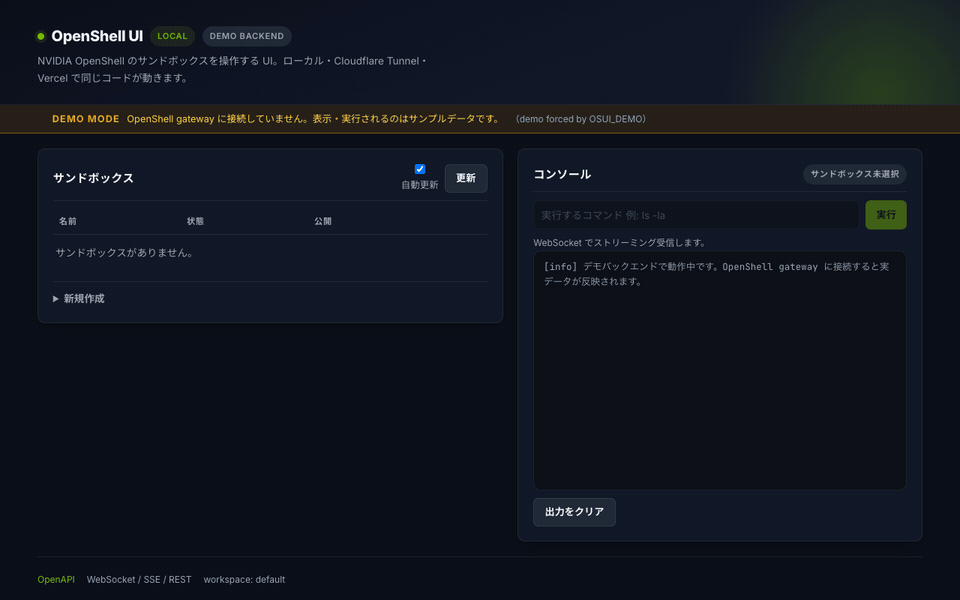
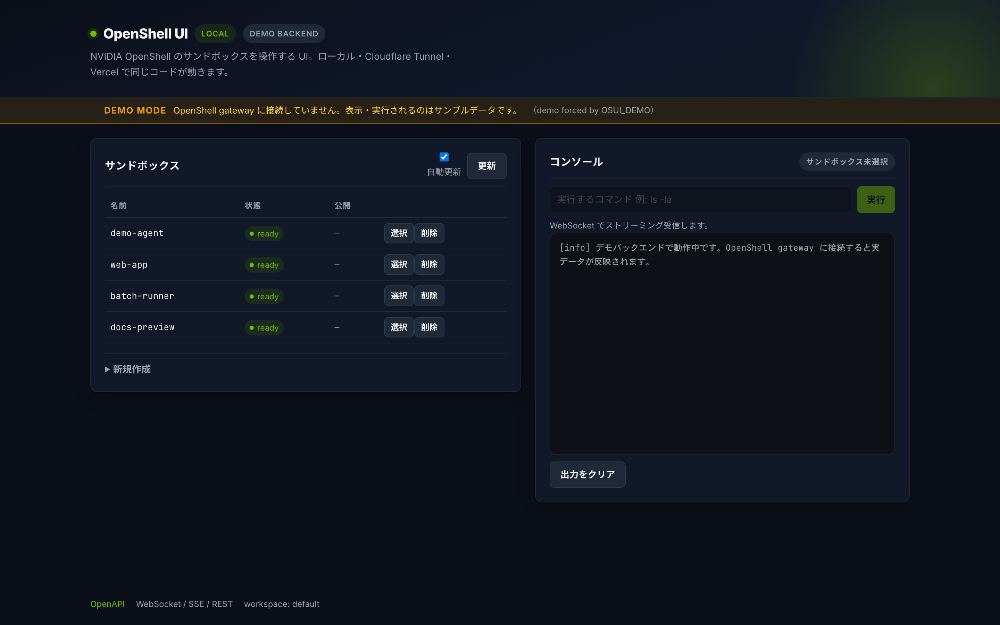

OpenShell とは何か
NVIDIA OpenShell は、自律的に動作する AI エージェント（agent の集合体）を カーネルレベルの隔離されたサンドボックスで実行するためのオープンソース・ランタイムです。 エージェントにはファイル読み書き・パッケージ導入・API 呼び出し・クレデンシャル利用といった 能力を与えつつ同時に、あなたのデータ・シークレット・ネットワークへの無制限アクセスは渡さない。 何に触れてよいかを policy（宣言的 YAML）で記述し、OpenShell がそれを強制します。
なぜ必要なのか
エージェントは「ファイルを読めて、パッケージを入れられて、API を呼えて、鍵を使える」ときに初めて実用的になります。 同じアクセスが、そのまま実データ窃取・情報漏えいの経路にもなり得ます。OpenShell はこのトレードオフを 能力を保ちつつ、アクセスを明示的に制御することで解きます。
2 つの軸で統制する
カーネルレベルの強制
各エージェントは隔離されたサンドボックス内で動き、カーネルの制御がファイルアクセス・システムコール・ネットワーク接続のたびに policy を強制します。すべての外向き通信は sandbox を出る前に検査されます。
形式検証による policy 変更チェック
policy 変更が承認される前に形式検証を使い、「新しいホストへ鍵付きで到達できる」「新しい API メソッドを呼べる」といったリスクの高い権限拡大を検出します。検出された変更は人手レビューを待ちます。
脅威と対策
| 脅威 | 制御がない場合 | OpenShell がある場合 |
|---|---|---|
| データ持ち出し エージェントがソースコードや社内ファイルを不正な送信先へアップロードする |
そのまま漏れる | network policy が承認済みの宛先だけを許可し、それ以外の外向き通信を deny |
| クレデンシャル窃取 SSH 鍵やクラウド認証情報をローカルから読む |
そのまま渡る | filesystem 制限（Landlock）が宣言済みパス以外へのアクセスを封じる |
| 未承認 API の利用 未承認のモデルプロバイダへプロンプトやデータを送る |
そのまま送られる | provider profile と network policy が、モデル通信を承認済みエンドポイントとバイナリに限定 |
権限昇格sudo、setuid パス、危険なシステムコールを試す |
昇格できる | 非特権のプロセス identity と seccomp 制限が昇格経路を遮断 |
多層防御（どの層がいつ効くか）
| 層 | 何を守るか | 反映タイミング |
|---|---|---|
| Filesystem | 許可パス外の読み書きを阻止 | sandbox 作成時に固定（locked） |
| Network | 未承認の外向き接続を遮断 | 実行中にホットリロード可 |
| Process | 権限昇格と危険なシステムコールを阻止 | sandbox 作成時に固定（locked） |
| Provider credentials | 不透明なクレデンシャル・プレースホルダーを profile 認可エンドポイントでのみ解決します | attach / rotate / revoke は実行中。新規環境変数はプロセス再生成が必要 |
agent は本物のクレデンシャルを一切見ません。OpenShell が承認済み宛先宛のリクエストにだけ資格情報を付与します。
構成要素
OpenShell の中心は gateway（コントロールプレーン）です。sandbox を作ると、compute driver が workload と独立した supervisor を用意し、両者の保護されたチャネルを張って隔離境界を構築します。 supervisor が境界を確認したうえで agent を起動し、以後は gateway に policy・クレデンシャル・ログ・対話セッションを要求します。
| 要素 | 役割 |
|---|---|
| Gateway | コントロールプレーン。認証し、sandbox の台帳を保持し、policy / 設定の配信・provider の attach・認可・接続の調停を行う |
| Compute runtime / driver | sandbox を作成し supervisor と workload を起動し、プライベートチャネルと network fence を構築します。判断は行いません |
| Supervisor（信頼側） | リクエストを policy と照合し、クレデンシャルを供給し、DNS を解決し、承認済み接続を確立する |
| Sandbox / workload（非信頼側） | agent と同じ境界内に居住。プロセスの所有権を持ち、どのプログラムが要求したかを /proc の信頼できる情報から特定し、TCP / DNS を seccomp で捕捉して supervisor へ渡します |
| Policy / Provider | agent が触れるもの（ファイル・プロセス・ネットワーク宛先・API・クレデンシャル先）を記述します |
| Policy prover | gateway 内で形式検証を実行し、agent 提案のネットワークルールを検査。standalone の openshell-prover として CI でも利用できる |
ネットワーク要求の流れ
- エージェントが TCP 接続を開き、または DNS 照会を行う
- sandbox が呼び出し元のプログラムを特定する（
/procの信頼できる観測） - 要求が Sandbox Protocol 経由で supervisor へ渡る
- supervisor が policy と照合し、policy が認めるクレデンシャルを付与する
- 許可された場合のみ、supervisor が実際の接続を開いて中継する
ランタイムごとの境界の作り方
| ランタイム | supervisor の配置 | sandbox との通信 | 直接 egress の遮断 |
|---|---|---|---|
| Docker | 専用コンテナ | driver 所有ボリューム上の認証付き Unix socket | workload コンテナの networking を無効化 |
| Podman | 専用コンテナ | 認証付き Unix socket | workload コンテナの networking を無効化 |
| Kubernetes | 専用 pod | mutual TLS による private service | NetworkPolicy で supervisor サービスのみ許可 |
| VM / MicroVM | ホスト上のプロセス | 認証付き vsock | ゲストにネットワークデバイスを与えない |
supervisor と sandbox は OpenShell Sandbox Protocol で対話します。相互認証された 1 本の HTTP/2 接続が 多数の独立したストリームを運びます（制御・DNS・接続ごとの TCP）。compute driver が transport を選びますが （Docker/Podman は Unix socket、Kubernetes は TCP、MicroVM は vsock）、認証とプロトコルの挙動はすべて同一です。 接続ごとの独立 backpressure があるため、遅いダウンロードが DNS や exec を塞ぎません。
コンポーネント間の認証
gateway だけが資格情報を署名し、すべての資格情報はちょうど 1 つの sandbox のみを指します。sandbox の 1 回の実行ごとに gateway が JWT のペアを発行します。
| 接続 | 保護の方法 |
|---|---|
| supervisor → gateway（supervisor 側が dial out） | gateway JWT。gateway が TLS を有効化していれば TLS 上。supervisor に必要な呼び出し（policy 取得・ログ送信・セッション中継）のみを許可し、他の sandbox を管理できない |
| supervisor → sandbox | mutual TLS + sandbox JWT。sandbox は gateway の public key しか持たず、トークンを検証できるが生成はできない |
| agent → supervisor | 直接接続しない。sandbox が上のチャネルで中継する |
両方の JWT は sandbox とその 1 回の実行（generation）に束縛されます。sandbox を再起動すると新しい generation になり、 新しいトークンと新しい TLS 証明書が発行され、古いものは失効します。supervisor が切断されると sandbox は agent を 凍結し、同じ supervisor プロセスだけが再接続して再開できます（有効なクレデンシャルを持つ別 supervisor への乗っ取りは不可）。
結果として、agent 側には盗む価値のあるものがありません。gateway の署名鍵、gateway JWT、provider クレデンシャルは 一切 sandbox 側に置かれません。
OpenShell に入る（最小手順）
# Linux / Apple Silicon の macOS / WSL2（experimental）+ Docker / Podman / ホスト仮想化が必要
curl -LsSf https://raw.githubusercontent.com/NVIDIA/OpenShell/main/install.sh | sh
openshell status
openshell sandbox create --name demoインストーラが CLI とローカル gateway をセットアップします。既定の sandbox イメージは agent 未インストールの最小 Ubuntu です。 実際の agent（OpenCode など）を動かす場合は model provider の設定と policy 承認の方法が別途必要です。 詳細は 公式ドキュメント と GitHub リポジトリ を参照してください。
何ができるか
OpenShell の sandbox は「隔離された実行環境」です。openshell-plus はそのライフサイクルを HTTP API と WebSocket コンソールにマッピングし、CLI と同じ操作をブラウザの画面から行えるようにします。
サンドボックス作成
名前と公開ポート（サービス名も任意）を指定して作成。作成後は provisioning → ready の状態を自動追跡します。
一覧と監視
phase を日本語ラベルに変換して表示。running / stopped / failed などの状態を色分けします。
シェルコンソール
WebSocket 経由で stdout / stderr をストリーミング表示します。workdir（作業ディレクトリ）と timeout_seconds（タイムアウト）を指定できます。
サービス URL
作成時に指定した公開ポート（service expose 相当）の URL を API 経由で取得して表示します。
削除
確認ダイアログ付きで削除。UI 側は delete(name, workspace=...) を呼び出して一覧を即時更新します。
Bearer Token 認証
OSUI_AUTH_TOKEN を設定すると全 API が保護されます。公開 bind 時はトークンなしの起動を拒否します。
画面
ダッシュボードは一覧・シェルコンソール・作成フォームを 1 画面にまとめています。 下のアニメーションは、サンドボックス作成 → 一覧反映 → コマンド実行までの実際の操作を録画したものです。

demo-agent が出現 → コンソールで ls -la / python --version を実行。demo backend のため出力はサンプルです。
4 つのデプロイ形態
同じアプリケーションを、用途に応じて 4 通りの形で公開できます。構成は OSUI_MODE と起動方法だけで切り替わります。
| 形態 | backend | 起動方法 | 用途 |
|---|---|---|---|
| ローカル | OpenShell | uv run python -m openshell_ui → http://127.0.0.1:8080 |
手元の gateway に実接続。ポートフォワード不要。 |
| Cloudflare Tunnel | OpenShell | cloudflared tunnel run + WebSocket コンソール |
手元の gateway を HTTPS で URL 化。トークン必須。 |
| Vercel | demo | vercel deploy → HTTPS 自動 |
デモ・UI プレビュー。Vercel から手元の gateway へは到達できないためサンプルデータのみ。 |
| Google Colab | demo | notebook 実行 → serve_kernel_port_as_iframe |
ブラウザだけでデモを確認。GPU ランタイムでも実行可。 |
Colab で 3 ステップ・clone 不要
ブラウザだけでデモを動かせます。ローカルへの clone もビルドも不要です。GPU ランタイムでも同じ手順で動きます。

1. Colab で開く
上のバッジをクリックします。Google アカウントがあればそのままで開きます。所要は数秒です。
2. すべてのセルを実行
メニュー「ランタイム」から「すべてのセルを実行」を選びます。1〜2 分かかります。セルは依存順に並んでおり、個別に選ぶ必要はありません。
3. 画面を操作する
出力セルの下に iframe でダッシュボードが現れます。一覧の「新規作成」で demo-box を作り、コンソールに ls を入力して「実行」を押してください。
OSUI_DEMO=true と OSUI_MODE=colab で uvicorn 起動 → 127.0.0.1:8080 が接続を受けるまで最大 30 秒待機 → iframe 埋め込み。
- ノートブック
deploy/colab/openshell_colab.ipynb— 同じノートブックを全環境で使えます。用途別のレシピは USAGE.md を参照してください。 - 公開トンネルは使いません。 Colab の FAQ は、インタラクティブな計算と無関係な Web サービス提供、および無料枠での「ノートブック UI を迂回して Web UI を主眼として操作すること」およびリモートプロキシへの接続を禁じています。恒久トンネルは VM リセットで切れ、アイドルでランタイムも終了します。
構成図
ブラウザ → FastAPI → backend → OpenShell gateway → 隔離境界という操作の流れと、 supervisor と sandbox の分界を 1 枚にまとめたものです（下の図はインタラクティブに操作できます: クリックで選択、テーマ切替、拡大縮小、PNG / SVG 書き出しに対応）。 このページの配色に合わせたライトテーマで埋め込んでいます。図のツールバーから ダークテーマに切り替えることもできます。「全画面で開く」で単独表示した際は、 保存済みの設定または端末の設定が優先されます。
core/factory.py が起動時に gateway へ health で接続を試み、到達できなければ demo backend にフォールバックします。
Vercel や Colab のように実 gateway に到達できない環境でも、demo backend にフォールバックすることで、UI が落ちないようにするための設計です。
クイックスタート（ローカル）
git clone https://github.com/watanabe3tipapa/openshell-plus.git
cd openshell-plus
uv sync --all-extras
# OpenShell CLI が未導入の場合
curl -LsSf https://raw.githubusercontent.com/NVIDIA/OpenShell/main/install.sh | sh
openshell status
# 実際に gateway へ接続する場合
export OSUI_GATEWAY_ENDPOINT=https://localhost:17670
./scripts/run-local.sh
# → http://127.0.0.1:8080openshell status で endpoint を確認してください。パッケージの既定 TLS ポートは 17670 です（gateway ごとに異なる場合があります）。接続に失敗すると自動的に demo mode へ切り替わり、サンプルデータが操作できます。失敗として扱いたい場合は OSUI_REQUIRE_GATEWAY=true を指定します。
目的別の活用レシピ、コンソールの制約（パイプやリダイレクトが効かない点など）、トラブルシューティングは USAGE.md にまとめています。
続きを読む
このページは概要編です。設定値や API の詳細、公開時の注意は次のページにまとめています。